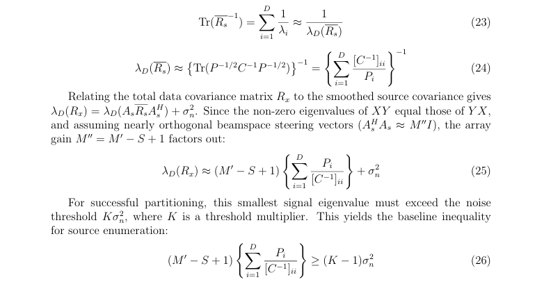

Research archive / Bachelor's Thesis
Passive RADAR for UCAs
Research paper, bachelor's thesis, mathematical summary, and technical notes.
Conference paper
Non-Minimum-Phase Channel DoA Estimation via UCA Phase-Mode Smoothing and Enhanced Subspace Separation
Chinmay Deo, C. Ramanathan, C. R. Venkatesh, and K. Giridhar · MILCOM 2026
This project was carried out in collaboration with Data Patterns Pvt. Ltd.

Publication information
Publication details
Abstract
Coherent sources such as multipath and interference severely degrade subspace-based direction-of-arrival (DoA) estimation, particularly in non-minimum phase channels. This paper investigates the recovery of the line-of-sight (LOS) direction using a highly undersampled five-element uniform circular array (UCA). By transforming the UCA manifold into mode-space and applying spatial smoothing with forward-backward averaging, the signal subspace is restored despite strong coherence. A dynamic noise-variance-based thresholding rule is introduced for robust subspace separation, addressing the failure of conventional model-order selection methods. Simulation results demonstrate reliable LOS DoA estimation across specular-dominant and fully scattered propagation environments and near Cramér–Rao bound performance for operational SNRs above 5 dB, establishing a narrow yet practical operating regime for compact sensing systems.
Undergraduate research
Bachelor's Thesis
The extended thesis documenting the research, mathematical formulation, methodology, and results of the project.

Supporting material
Presentations / Technical Notes
Presentations and technical notes covering the theoretical foundations of the research.
Source code is not publicly available due to confidentiality of the project.